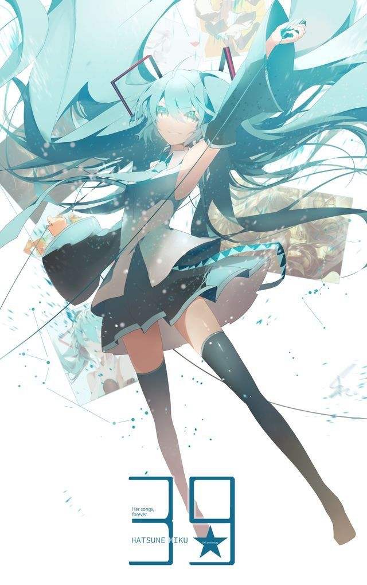

Hatsune Miku
Suara Pertama dari Masa Depan
Rilis: 31 Agustus 2007
Umur: 16
Gender: Perempuan
Kode: CV01
Ilustrator: KEI
Pengisi Suara: Saki Fujita

Versi V2
Rilis: 31 Agustus 2007
Umur: 16
Gender: Perempuan
Kode: CV01
Ilustrator: KEI
Pengisi Suara: Saki Fujita
Nama Hatsune Miku dipilih dengan menggabungkan hatsu (初; "pertama"), ne (音; "suara"), dan Miku (未来; nama pribadi yang ejaannya sama dengan kata "masa depan"). Dengan demikian, artinya "suara pertama dari masa depan." Namanya didasarkan pada konsepnya tentang saat suatu suara pertama kali diucapkan.
Kode namanya "CV01" yang berarti "Character Voice 01".
Setelah sebuah meme internet yang melibatkan Hachune Miku, Miku dikaitkan dengan daun bawang (sering dikira sebagai daun bawang prei karena penampilannya yang mirip). Hal ini, bersamaan dengan keterkaitan KAITO dengan es krim, memicu diskusi yang disebut "Perang Item" di kalangan penggemar VOCALOID, di mana menjadi tradisi bagi VOCALOID baru untuk diberi item dan item-item tersebut diperdebatkan hingga salah satunya menjadi populer melalui sebuah meme internet. Kejadian ini kemudian mereda.
Saat KEI mengilustrasikan Miku, ia diberi skema warna untuk dikerjakan (berdasarkan warna biru-hijau khas synthesizer YAMAHA) dan diminta untuk menggambar Miku sebagai android. Crypton juga memberikan KEI konsep detail Miku, namun, Crypton mengatakan tidak mudah menjelaskan apa itu "Vocaloid" kepadanya. KEI mengatakan ia tidak dapat menciptakan gambar "komputer yang bernyanyi" pada awalnya, karena ia bahkan tidak tahu apa itu "synthesizer". Butuh waktu lebih dari sebulan baginya untuk menyelesaikan pesanan tersebut.
Miku awalnya direncanakan memiliki gaya rambut yang berbeda, tetapi setelah mencoba gaya rambut kepang, KEI berpikir gaya tersebut lebih cocok. Kepang rambutnya sejak itu menjadi bagian ikonik dari desainnya. Pada 22 Juni 2012, kepang rambut kembar Hatsune Miku bahkan membuatnya mendapatkan gelar Kepang Rambut Kembar yang paling mewakili era 2000-an, menjadikannya pemilik Kepang Rambut Kembar terbaik dari awal abad ke-21. Ia kini berbagi predikat kepang rambut kembar dengan karakter lain seperti Sailor Moon (yang memenangkan gelar Kepang Rambut Kembar terbaik pada periode 90-an).
Desain digital pada rok dan sepatu bot Miku didasarkan pada warna program synthesizer, dan garis-garis tersebut mewakili garis-garis sebenarnya dalam program tersebut, mengikuti ide Crypton. Sebagian dari desainnya didasarkan pada beberapa model keyboard YAMAHA, khususnya DX-100 dan DX-7. Kotak-kotak tipis di sekitar kepang rambutnya adalah pita futuristik yang terbuat dari bahan khusus yang melayang di tempatnya. Seperti yang terlihat dalam karya seni KEI untuk Miku, pita tersebut mampu menahan kepang Miku di tempatnya tanpa harus menyentuh rambut secara fisik. Pita tersebut juga dilaporkan oleh KEI sebagai barang yang paling sulit untuk direplikasi oleh kosplayer.